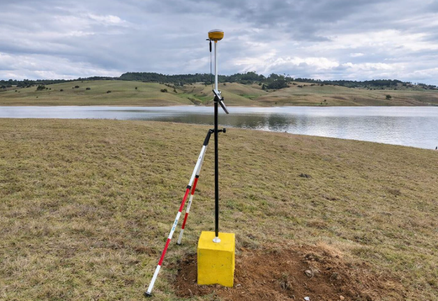

Cultura · Evento
Feria Internacional del Libro de Bogotá 2026 abre sus puertas en Corferías
La FILBo 2026 se realiza del 21 de abril al 4 de mayo en Corferías, consolidándose como el mayor evento cultural del país y uno de los más importantes de América Latina. Participan editoriales, autores y universidades de toda Colombia y el mundo. La Universidad de Medellín participa con presentaciones académicas en el stand 518.
21 abr. 2026 · El Tiempo / U. de Medellín
